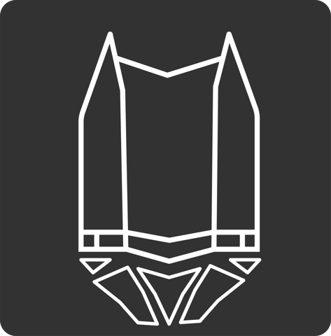
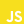

مشهد مترو
در شهر امام رضا (ع)
من کیام؟
شهریار قاسمپور
سلام! من شهریارم و ساکن مشهدم. بیشتر با Flutter، Go و Python کار میکنم و عاشق ساختن ابزارهاییام که واقعاً به درد آدمها بخورن. به نرمافزار آزاد علاقه دارم، دربارهش مینویسم و توی کانال یوتیوبم هم محتوا میذارم. «مشهد مترو» هم از همین علاقه و دغدغههای زندگی توی این شهر شروع شد.

کانال یوتیوببرای بازدید، اسکن کنید
شکلگیری ایده
مشکل: اطلاعات دقیق، دم دست نبود
مشهد دومین شهر بزرگ ایران و مقصد میلیونها زائر در هر ساله. مترو هم بخش مهمی از ناوگان حملونقل شهری مشهده و نقش پررنگی توی رفتوآمدهای روزمرهٔ شهر، بهخصوص رفتوآمد به حرم مطهر داره. با این حال، پیدا کردن اطلاعات دقیق و قابلاعتماد از ایستگاهها، آدرسها و امکاناتشون کار سادهای نبود. به اپلیکیشنی ساده، رایگان و آفلاین نیاز داشتیم که هم ساکنان و هم زائرهایی که برای اولین بار به شهر میان بتونن راحت ازش استفاده کنن.
یک سوال
قدم اول برای ساخت این پروژه چیه؟
{
"name": "Bab Al-javad",
"translations": { "fa": "باب الجواد(ع)" },
"lines": [3],
"longitude": "59.611194298074224",
"latitude": "36.285214955489636",
"address": "میدان بیت المقدس-بلوار شهید اندرزگو-رو به روی درب باب الجواد(ع) حرم مطهر",
"colors": ["#FA9702"],
"wc": true, "atm": true, "elevator": true,
"prayerRoom": true, "freeWifi": false,
"NearHolyshrine": true,
"relations": ["Shohada"]
}
قدم اول
جمعآوری داده
اولین قدم، ساختن یک مجموعهداده باز بود. هر ایستگاه یک رکورد JSON است با نام فارسی و انگلیسی، خط و رنگ، آدرس کامل، امکاناتی مثل سرویس بهداشتی، خودپرداز، آسانسور و نمازخانه، و فهرست ایستگاههای همسایه که کل شبکه را به یک گراف تبدیل میکند. دادهها در ریپازیتوری mashhad-metro-data با لایسنس ODbL منتشر شدهاند و یک نمایشگر تعاملی هم برای دیدن گراف ایستگاهها دارند.
طراحی اپلیکیشن
ساده و قابلفهم
رابط کاربری اپ با الهام از طراحی اپلیکیشن مترو تهران ساخته شد تا برای همه آشنا و راحت باشد. حالت تاریک و روشن، چیدمان تمیز و توجه به دسترسپذیری برای کاربرانی با هر سن و توانایی، در کنار یک قول ساده: بدون هیچ تبلیغ و ردیابی.
ساخت بخشها
امکانات اپ
با نقشهٔ تعاملی که روی OpenStreetMap ساخته شده، همهٔ ایستگاهها را میبینید و برای هرکدام آدرس، موقعیت دقیق و اطلاعات کامل را میخوانید. میتوانید ایستگاههای دارای آسانسور، سرویس بهداشتی، وایفای یا پارکینگ را پیدا کنید و خطها و ایستگاههای تقاطعی را مرور کنید؛ همهٔ اینها کاملاً آفلاین و با Flutter و Riverpod پیادهسازی شده است.
طراحی لوگو
هویت اپلیکیشن
آیکون اپلیکیشن را سجاد خیابانی طراحی کرده است؛ نشانی ساده، مدرن و قابلتشخیص که روح مشهد مترو را در یک نگاه نشان میدهد.
پلتفرمها
مشهد مترو برای این سیستمها آماده است
یک کدبیس، با Flutter
آینده
برنامه ما
در آینده، انتشار نسخهٔ ۱.۰ اپلیکیشن با امکانات زیر:
بروزرسانی کامل UI/UX اپلیکیشن
امکان مسیریابی
امکان ثبتنام و ساخت پروفایل کاربری
زمان رسیدن قطار به هر ایستگاه
بروزرسانی لحظهای دادههای قطار شهری
ثبت گزارش از طریق اپلیکیشن
انتشار نسخهٔ ویندوزی
مشارکت
چطور کمک کنیم؟
توسعهدهنده
حمایت مالی و سرمایهگذاری
مسئولیت اجتماعی شهروندان
مشارکت · ۱ از ۳
توسعهدهنده
Flutter
Dart
OpenStreetMap
Git

JavaScript HTML5
HTML5CSS3
GitHub
مشارکت · ۲ از ۳
حمایت مالی
اگر مشهد مترو برایتان مفید بود، با یک دونیت کوچک به ادامهٔ توسعه و نگهداری آن کمک کنید.


پایان ارائه
ممنون از همراهی شما
github.com/shahriaarrr/mashhad-metro
github.com/shahriaarrr/mashhad-metro-data